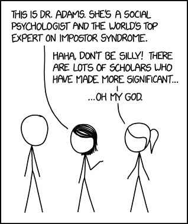
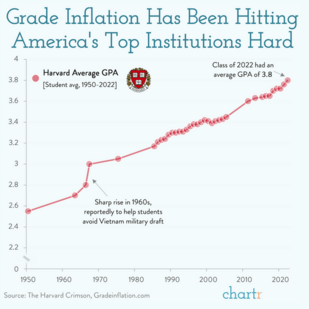
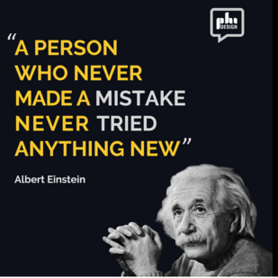
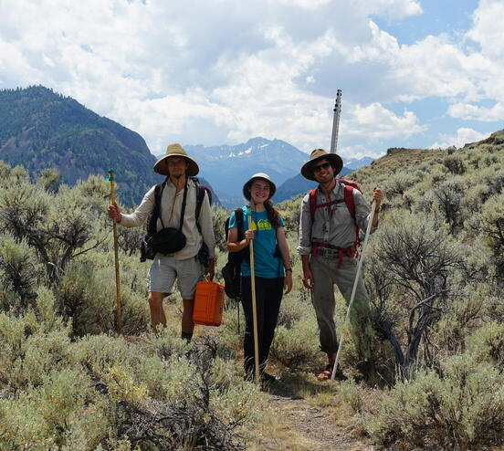
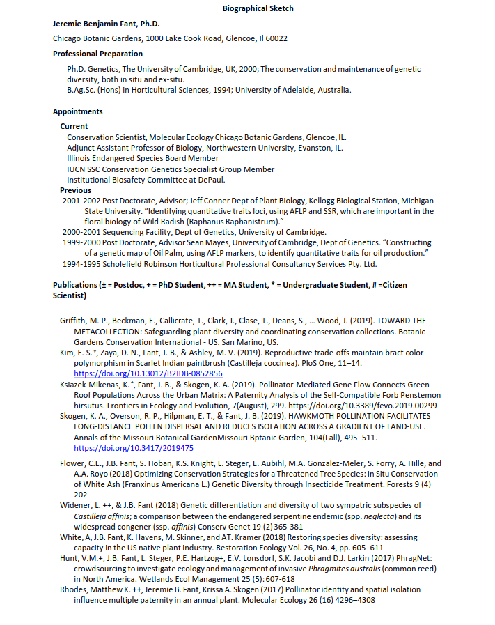
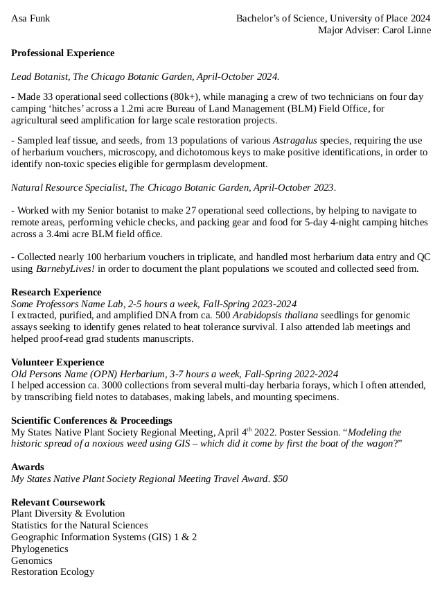
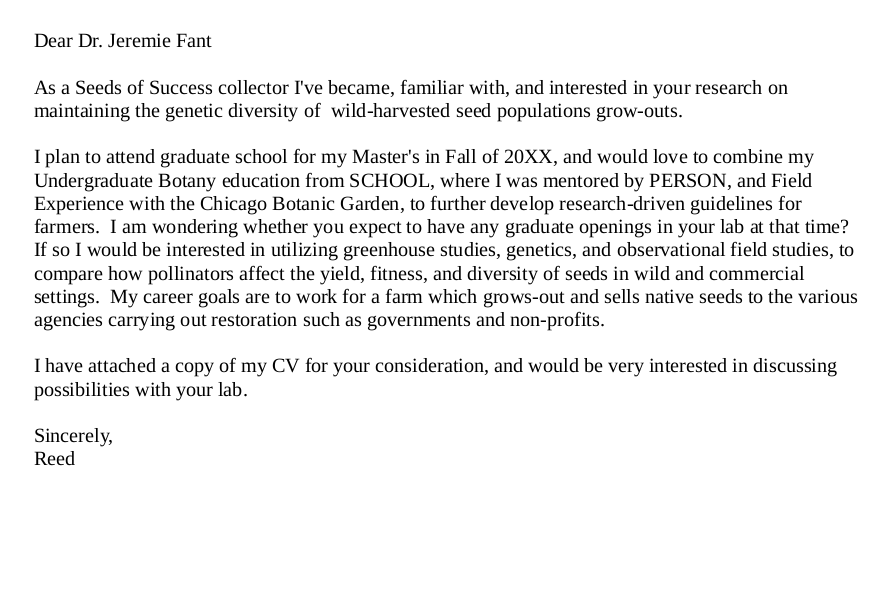
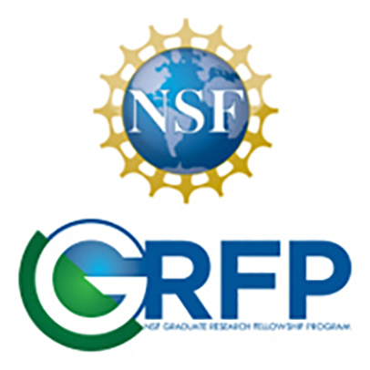

For Botanists
June 6, 2024
remember a back-and-forth must still end with step 3







Jobs exist for those who work for them, and get a little lucky
Do not expect to be rewarded for mediocrity, your job is to push the limits of human knowledge
These Programs are very strong

Delineating species, understanding the relationships among species, and postulating how lineages have adapted
100/100 of scientists agree “Unequivocally the coolest field in science.”
What types of jobs do people that get these degrees get?
Describing early diverging lineages, understanding major advances in plant evolution
What types of jobs do people that get these degrees get?
Using genetic data to prioritize the conservation of populations and species
What types of jobs do people that get these degrees get?
get really good at making stuff up.
What types of jobs do people that get these degrees get?
developing mathematical and theoretical frameworks for understanding the natural world
the new hot thing …again…
What types of jobs do people that get these degrees get?
Understanding how patterns and processes affect ecology of areas and organisms
THIS PATH HAS JOBS
What types of jobs do people that get these degrees get?
how do we restore different amounts of ecological function to areas?
THIS PATH HAS MANY JOBS
What types of jobs do people that get these degrees get?
how to manage grasslands for multiple uses, but mostly cattle grazing
THIS PATH HAS MANY JOBS
What types of jobs do people that get these degrees get?
how to manage forest for sustainable timber harvests
THIS PATH HAS MANY JOBS
What types of jobs do people that get these degrees get?
how to grow many species of plants
totally distinct field, lot’s of jobs
if you want to grow plants this is the place to be
go to a HORTICULTURE Program not a botany program!!!
I suspect a good education if you want to work in the agronomy side of native seeds
What types of jobs do people that get these degrees get?